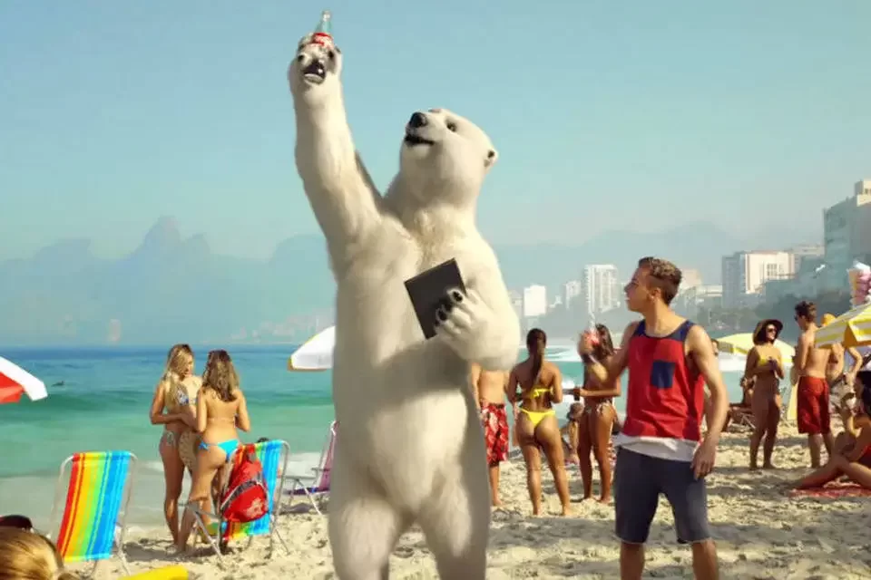

Primeiramente, a principal ideia das campanhas de publicidade da Coca-Cola é contar histórias que permitem identificação por parte do público. A partir daí, então, o cliente cria um tipo de conexão com sentimentos e sensações, e não somente com vantagens ou desvantagens do produto vendido. Esse tipo de ação é chamada de Marketing de Experiência e busca impactar diretamente as pessoas com storytelling. Essa ferramenta – com nome inglês para contar histórias – desenvolve narrativas simples, mas bem estruturadas, capazes de criar um tipo de engajamento em níveis emocionais. Dessa maneira, o produto fica diretamente relacionado às experiências, ganhando mais valor para quem assiste às propagandas. É assim, por exemplo, que a marca mostra que os momentos felizes precisam da presença de uma Coca-Cola, seja em festas, entre amigos ou celebrações de família. Com os exemplos positivos, as propagandas da Coca-Cola relacionam a bebida aos momentos, fazendo com que as pessoas queiram reproduzir os sentimentos.
Não dá pra falar de propagandas da Coca-Cola sem falar dos famosos ursos polares utilizados pela marca, especialmente em campanhas de Natal. Além disso, não dá pra negar que o fato deles viverem no mundo de gelo promove a fácil associação da bebida consumida gelada. Ainda hoje, os ursos polares são presença marcante em campanhas de fim de ano da marca.
É creditada a Coca-Cola, como criadora da imagem do Papai Noel moderno como um homem velho, alegre e gorducho em um terno vermelho e branco. A Coca-Cola inventou o Papai vermelho-e-branco alegre durante a década de 1930, a ilustração feita por Haddon Sundblom. Antes, mulheres bonitas jovens foram usadas para endossar a marca Coca-Cola.
>
A mais de um séculos, a Coca-Cola nasceu em uma pequena farmácia em 1886. Agora, a Coca-Cola continua a proporcionar magia para toda pessoa que bebe Coca-Cola. Que tem se expandido mundialmente para os lugares de maior alcance, oferecendo 500 marcas e produtos para o mundo. Coca-Cola é uma das marcas mais amada atualmente.